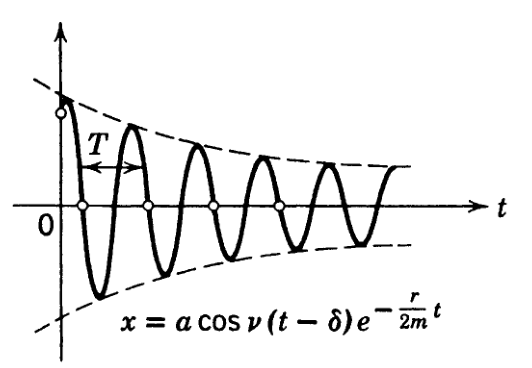

a. 解的形式
我们很容易求得齐次方程 (1)，即 mx¨+rx˙+kx=0，的一个指数形式的解。只须选择常数 λ，使 eλt=x 成为方程的解。把这个试探解及其导数 x˙=λeλt、x¨=λ2eλt 代入微分方程，再消去公因子 eλt，就得到关于 λ 的二次方程
mλ2+rλ+k=0.(2)它的两个根是
λ1=−2mr+2m1r2−4mk,λ2=−2mr−2m1r2−4mk.把上述计算倒过来，就可看出，至少在形式上，x=eλ1t 和 x=eλ2t 各是原微分方程的一个特解。现在有三种不同的情形。
1. r2−4mk>0。 这时两个根 λ1 和 λ2 是不相等的负实数，微分方程有两个解
u1=eλ1t,u2=eλ2t.有了这两个解，立刻就能构造出一个含有两个任意常数的解。事实上，求导便可验证
x=c1u1+c2u2(3)也满足微分方程。在第 9.3 节我们将说明，这个表达式给出的确实是方程最一般的解。也就是说，适当地选取 c1 和 c2 的数值，就能得到方程的每一个解。
2. r2−4mk=0。 这时二次方程有一个二重根。因此，除去一个常数因子，我们起初只得到一个解 x=w1=e−rt/2m。不过，很容易验证，此时函数
x=w2=te−rt/2m也是微分方程的解。¹ 因为直接计算得
x˙=(1−2mrt)e−rt/2m,x¨=(4m2r2t−mr)e−rt/2m.代入后可见，微分方程
mx¨+rx˙+4mr2x=mx¨+rx˙+kx=0确实成立。于是表达式
x=c1e−rt/2m+c2te−rt/2m(4)又给出了一个含有两个任意积分常数 c1 和 c2 的解。
原注 1（第 637 页） 从下述极限过程可以自然地想到这个解。当 λ1=λ2 时，(eλ1t−eλ2t)/(λ1−λ2) 也是一个解。令 λ1 趋于 λ2，并把它们的共同值写作 λ，这个表达式就变成 d(eλt)/dλ=teλt。
3. r2−4mk<0。 令 r2−4mk=−4m2ν2，就得到微分方程的两个复数形式的解 x=u1=e−rt/2m+iνt 和 x=u2=e−rt/2m−iνt。根据欧拉公式
e±iνt=cosνt±isinνt,复数解 u1 的实部和虚部一方面可写成
v1=e−rt/2mcosνt,v2=e−rt/2msinνt,另一方面又有
v1=2u1+u2,v2=2iu1−u2.从后一种写法可见，v1 和 v2 都是微分方程的实数解。通过求导、代入来直接验证这一点，是个简单的练习。
从这两个特解出发，又可构成含有两个任意常数 c1 和 c2 的通解
x=c1v1+c2v2=(c1cosνt+c2sinνt)e−rt/2m.(5)它也可以写成
x=ae−rt/2mcosν(t−δ),(6)这里置 c1=acosνδ、c2=asinνδ，a 和 δ 是两个新的常数。回想一下，在 r=0 的特殊情形，我们已经遇到过这个解（第 5.4 节）。
b. 解的物理意义
在 r>2mk 和 r=2mk 两种情形中，表示解的曲线是指数曲线，或是函数 te−rt/2m 的图像（t 很大时，它与指数曲线相似），或是这类曲线叠加而成的曲线。这时的过程是非周期性的。随着时间推移，“距离” x 渐近于零，不会围绕 x=0 来回摆动。因此，这种运动并不发生振荡。摩擦所起的作用，也就是阻尼，大到足以使弹性力无法激起振荡。
对于 r<2mk，情形就很不同了。这时阻尼很小，出现了复数根 λ1、λ2。表达式 x=acosν(t−δ)e−rt/2m 给出阻尼简谐振动。这种振动遵循正弦规律，角频率为 ν=k/m−r2/4m2，振幅则由 ae−rt/2m 给出，随时间按指数规律减小。r/2m 越大，振幅衰减得越快。物理文献常把这个阻尼因子称为阻尼振动的衰减常数，因为振幅的对数以 r/2m 的速率减小。图 9.2 画出了这种阻尼振动。和以前一样，称 T=2π/ν 为振动的周期，称 νδ 为相移。在 r=0 这个特殊情形，又得到简谐振动，其频率 ν0=k/m 就是无阻尼振动系统的固有频率。

图 9.2 阻尼简谐振动
译者注 原书此段写作 r<2mk。据前文方程 (2) 的判别式，有一对非实根的完整条件为 r2<4mk，即 r<2mk。图中的 T 指相邻两个波峰间的时间；振幅每过一个 T 都会减小，所以整条曲线并不周期性地重合。
c. 满足给定的初始条件。解的唯一性
我们还要证明，适当地选取两个常数 c1 和 c2，所得的解就能符合任何预先指定的初始状态，并且这已经包括了方程的一切可能的解。假设要求一个解，使它在 t=0 时满足初始条件 x(0)=x0、x˙(0)=x˙0，其中 x0 和 x˙0 可以任意指定。在第 9.2 节 a 的第一种情形（第 636 页），必须有
c1+c2c1λ1+c2λ2=x0,=x˙0.这就是关于常数 c1 和 c2 的两个线性方程，它们有唯一的一组解
c1=λ1−λ2x˙0−λ2x0,c2=λ2−λ1x˙0−λ1x0.在第二种情形，同样的步骤给出两个线性方程
c1λc1+c2=x0,=x˙0(λ=−2mr),仍可由此唯一地确定 c1 和 c2。最后，在第三种情形，用来确定常数的方程为
acosνδa(νsinνδ−2mrcosνδ)=x0,=x˙0,解得
δ=ν1arccosax0,a=ν1[ν2x02+(x˙0+2mrx0)2].
译者注 用反余弦写相位时，仍要用第二个初始条件选对角的象限。当 a>0 时，cosνδ=x0/a，而 sinνδ=(x˙0+rx0/(2m))/(aν)。两式合起来把相位确定到相差 2π 的整数倍，得到的是同一个运动。当 a=0 时解恒为零，相位可以任取。
这样便证明了，通解可以符合任意给定的初始条件。还须证明再没有别的解。为此只需说明，给定一个初始状态，就不可能有两个不同的解。
假设存在两个这样的解 u(t) 和 v(t)，其中 u(0)=x0、u˙(0)=x˙0，又有 v(0)=x0、v˙(0)=x˙0。那么它们的差 w=u−v 也是微分方程的解，并且 w(0)=0、w˙(0)=0。这个解对应于一个静止的初始状态，即在 t=0 时质点处于平衡位置且速度为零。我们要说明它决不可能自行运动起来。把微分方程 mw¨+rw˙+kw=0 两边都乘以 2w˙，并注意到 2w˙w¨=(d/dt)w˙2 和 2ww˙=(d/dt)w2，便得
dtd(mw˙2)+dtd(kw2)+2rw˙2=0.从 t=0 到 t=τ 积分，并利用初始条件 w(0)=0、w˙(0)=0，就有
mw˙2(τ)+kw2(τ)+2r∫0τ(dtdw)2dt=0.如果在某一时刻 τ>0，函数 w 的值不等于零，上式就产生矛盾。因为 m、k 和 r 都取正值，这时方程的左边为正，右边却是零。因此 w=u−v 恒等于零，解的唯一性得证。